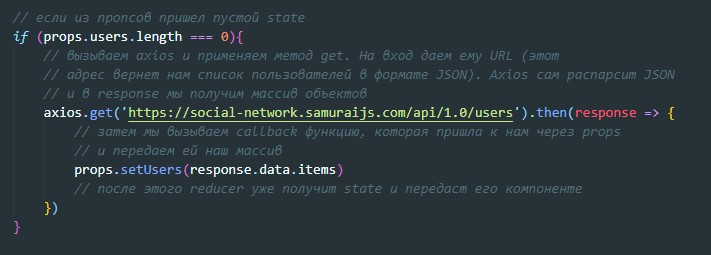
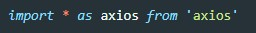
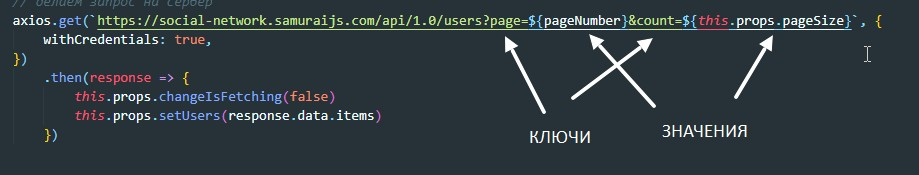
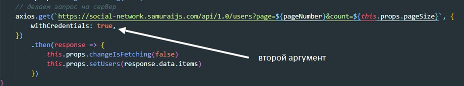
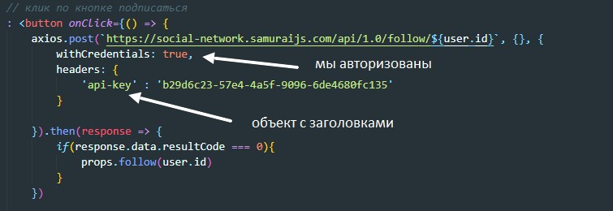
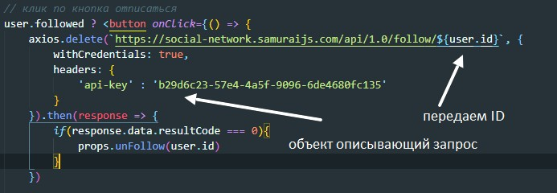
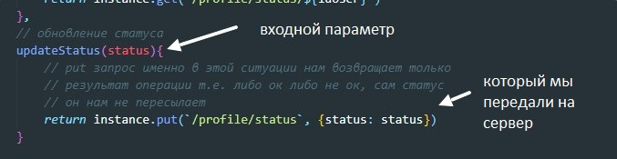
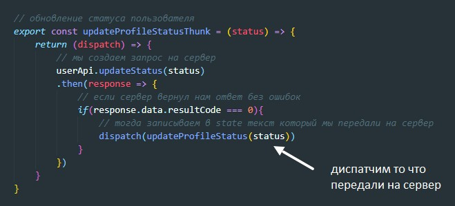

REST (от англ. Representational State Transfer — «передача состояния представления»)
CRUD - create readr update delete
Что бы общаться с сервером нам понадобятся 5 сущностей:
GET - get запрос нужен, что бы просто получить данные от сервера, он не подразумевает что вместе с ним будут отправлены какие-то данные на сервер (request payload нет)
POST - запрос наоборот подразумевает то, что мы на сервер что-то передаем (например данные формы)
PUT - значит что мы хотим что-то обновить (изменить). (request payload есть)
DELETE - как и get запрос ничего не отправляет на сервер (данных нет). Все что должен передать этот запрос это ID удаляемого элемента, а он зашивается в URL
Для отправки запросов на сервер можно использовать нативные способы JS (fetch запросы), то если мы используем React то лучше всего использовать библиотеку, которая называется axios
Что бы установить эту библиотеку в терминале вводим команду:
npm install axios -saveУ нас есть компонента, которая через пропсы получает callbck функцию, которая в случае если придет из reducer пустой state она пошлет в reduser данные которые будут state-ом по умолчанию.
Поэтому мы в самом компоненте пишем вот такой код:
Перед началом работы с axios нужно библиотеку импортировать
Эту строчку можно прочитать так: импортируем все как axios из библиотеки axios
response которые вернет axios вернет объект с ключами:
GET запросы используются когда нам необходимо запросить данные с сервера не отправляя при этом никакких данных. Фильтрация данных происходит с помощью данных которые зашиваются в URL. в конце URL прописывается знак вопроса и затем прописываются данные - ключ : значение разделенные амперсантом. Пример:
Если для получения определнных данных требуется авторизация, то здесь нам на помощь приходят cookie, в которые сервер прописывает идентификатор и при каждом запросе на сервер cookie цепляются к запросу, сервер считывает идентификатор и на основании него выдает только те данные которые соотвествуют идентификатору. Существуют кроссдоменные запросы, если нам нужно отправить кросдоменный запрос то методу GET мы должны передать помимо URL второй аргумент, это будет объект у которого будет свойство withCredentials со значением true
POST запросы используются когда нам нужно что-то отправить на сервер, например данные формы что бы пройти авторизацию. POST запросы сложнее обычных GET запросов. В отличии от GET запросов POST запросы отсылают на сервер помимо URL еще два объекта:
Первый - может принимать данные которые нам надо отправить на сервер, например те же данные формы обратной связи.
Второй - это тот же объект который описывает параметры запроса. Например мы так же можем указать withCredentials - true, что бы привязывать cookie и говорить о том что мы уже авторизованы. Так же мы можем передавать заголовки запросов. Пример:
О правилах POST запросов мы должны будем читать в технической документации проекта.
DELETE запросы используются когда нам нужно что то удалить. Как и метод GET он не отправляет на сервер данные, он может отправить ID который может быть зашит в URL. Вторым аргументом мы можем передать объект описывающий наш запрос. Структуру заголовков и описание DELETE запроса так же читаем в технической документации проекта. Как бэкендер решит, так и будет.
Как и POST запросы PUT могут передавать вместе с запросом тело - данные. Эти данные передаются вторым аргументом в качестве объекта
Если PUT запрос ничего не возвращает (имеется в виду данные помимо статусов) то что нам тогда диспатчить в санках?
